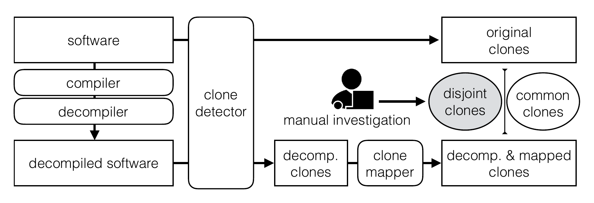
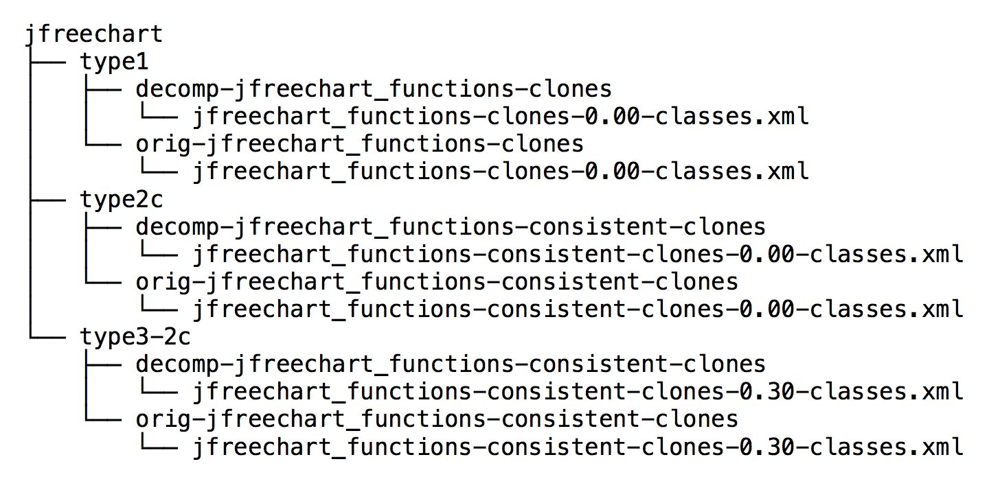

Project overview

We study effects of compilation and decompilation to code clone detection in Java. Compilation/decompilation canonicalise syntactic changes made to source code and can be used as source code normalisation. We used NiCad to detect clones before and after decompilation in three open source software systems, JUnit, JFreeChart, and Tomcat. We filtered and compared the clones in the original and decompiled clone set and found that 1,201 clone pairs (78.7\%) are common between the two sets while 326 pairs (21.3\%) are only in one of the sets. A manual investigation identified 325 out of the 326 pairs as true clones. The 252 original-only clone pairs contain a single false positive while the 74 decompiled-only clone pairs are all true positives. Many clones in the original source code that are detected only after decompilation are type-3 clones that are difficult to detect due to added or deleted statements, keywords, package names; flipped if-else statements; or changed loops. We suggest to use decompilation as normalisation to compliment clone detection. By combining clones found before and after decompilation, one can achieve higher recall without losing precision.
Downloads
Clone Oracle
The 326 clone pairs manually validated can be downloaded here.
Clone Mapper
The source code of clone mapper tool can be downloaded here.
Systems
The three selected systems for our study (junit4, jfreechart, tomcat) can be downloaded below:
- JUnit4: original | decompiled
- JFreeChart: original | decompiled
- Tomcat: original | decompiled
Replicate the Study
- Clone the repo.
- Download NiCad 4.0 and install it on your machine.
- Modify three NiCad's configuration: type1.cfg, type2c.cfg, and type3-2c.cfg by changing cluster to "yes" (cluster=yes).
- Run NiCad against each system both the original (in iwsc2017/systems) and the decompiled version (in iwsc2017/decompile).
- Copy clone class report to each corresponding folder of each system with each clone type in iwsc2017/results folder. For example, for jfreechart's type 1 clone, copy jfreechart_functions-clones-0.00-classes.xml to iwsc2017/results/jfreechart/type1/orig-jfreechart_functions-clones.
- The complete result of each system will look similar to this: 
- Change directory to CloneMapper.
- Modify the config.properties by changing the location of HOME_DIR and SRC_HOME_DIR to the full path of your iwsc2017 folder.
- Compile and run the clone mapper:
mvn compileandmvn exec:java - The common, orig-only, and decomp-only clone pairs are now created in the results folder of each system.
Contact
Please contact Chaiyong Ragkhitwetsagul (ucabagk at ucl dot ac dot uk) for any inquiries regarding this project.